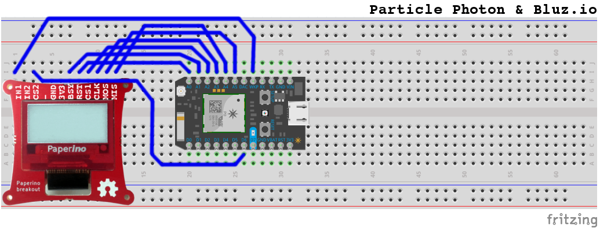
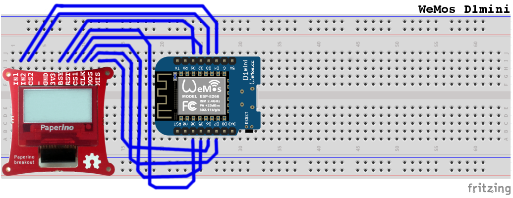
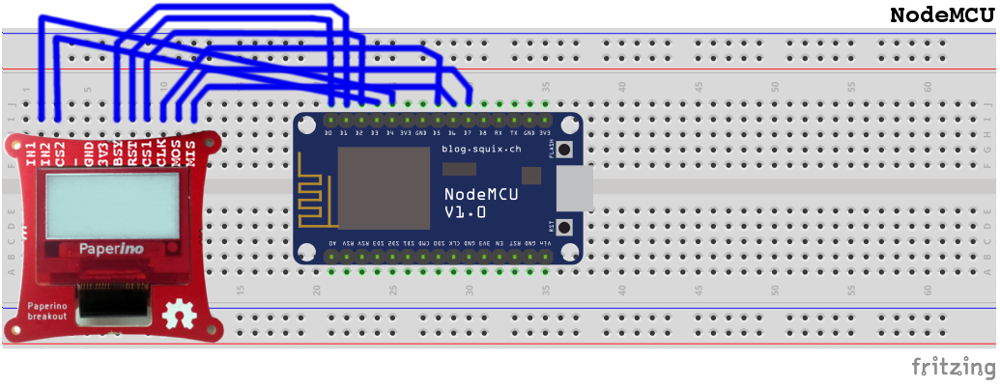
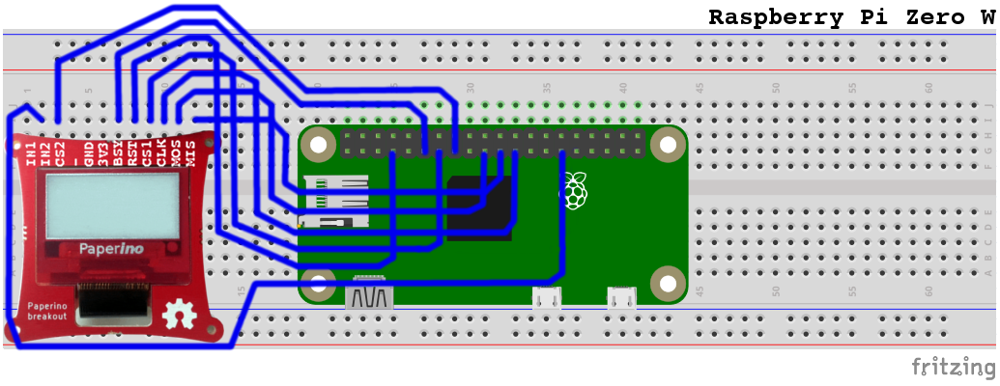

Hookup Guide 2
The tutorial is split into the following three sections:
- 1) Hardware Hookup – How to connect the breakout board with your microcontroller.
- 2) Including the Adafruit GFX library – How to include the library.
- 3) Verifying the pin mapping – Review the pin mapping and adjust if necessary.
1) Hardware Hookup
-

My slide caption text
-

My slide caption text
-

My slide caption text
-
 My slide caption text
My slide caption text -

My slide caption text
Now it’s time to wire things up! The breakout board provides access to 12 pins. The following table provides an overview of how the connect the pins for some typical Arduino MCUs:
| # | Pin | Function | Photon* / Electron / Bluz | Arduino MKRFOX1200 | NodeMCU | WeMosD1 Mini | Raspberry Pi Zero W |
|---|---|---|---|---|---|---|---|
| 1 | MOS | SPI MOSI | A5 | MOSI | D7 | D7 | MOSI |
| 2 | MIS | SPI MISO | A4 | MISO | D6 | D6 | MISO |
| 3 | CLK | SPI clock | A3 | SCK | D5 | D5 | SCK |
| 4 | CS1 | SPI chip select for ePaper driver IC | A2** | A2** | D2** | D2** | D2** |
| 5 | RST | Digital pin to reset driver IC | A0** | A0** | D0** | D0** | D0** |
| 6 | BSY | Digital pin to sense state of driver IC | A1** | A1** | D1** | D1** | D1** |
| 7 | 3V3 | Regulated 3.3V power supply | 3V3 | VCC | 3V3 | 3V3 | 3V3 |
| 8 | GND | Ground | GND | GND | GND | G | GND |
| 9 | - | (unused) | (unused) | (unused) | (unused) | (unused) | (unused) |
| 10 | CS2 | SPI chip select for accelerometer IC | D6** | A6** | D3** | D3** | D3** |
| 11 | IN2 | Interrupt line #2, e.g. for tap sensing | WKP** | A5** | D4** | D4** | D4** |
| 12 | IN1 | Interrupt line #1, e.g. for wake-up of deep sleeping MCU | WKP** | (not sup.) | (not sup.) | (not sup.) | (not sup.) |
* Same wiring as for Paperino Shield for Particle used ** or any other free GPIO pin
2) Using the Adafruit GFX Library with Paperino E-Paper display
Now that we have wired-up the Paperino breakout board with the MCU, it’s time to get started writing your own application! For this we’ll need to include the Adafruit GFX library and the hardware-specific library PL_microEPD. The integration varies depending on your used IDE.
Particle Web-IDE
If you are using the Particle Web-IDE, then please start by going to the Library Manager and search for PL_microEPD. Select one of the demos, i.e. _01_HelloWorld.ino and click on the button Use this example. This pastes a copy of the demo into your private App section. Now let’s repeat this step again by searching for Adafruit_GFX and add this library to this demo file by pressing the button Include in Project.
Arduino Web-IDE
If you are developing sketches with the Arduino Web-IDE
Arduino-IDE
3) Verifying the pin mapping
After you have included the library, its time to review and verify the pin mapping with the available pins of your used microcontroller:
#define EPD_RST A0 // Reset pin, used to restart the driver IC
#define EPD_BUSY A1 // Busy pin, used to sense the activity state of the driver IC
#define EPD_CS A2 // Chip select pin, used to select the EPD driver IC
That wasn’t too difficult, right? If you are interested in how to write more complex features on the ePaper we suggest starting with the examples section.